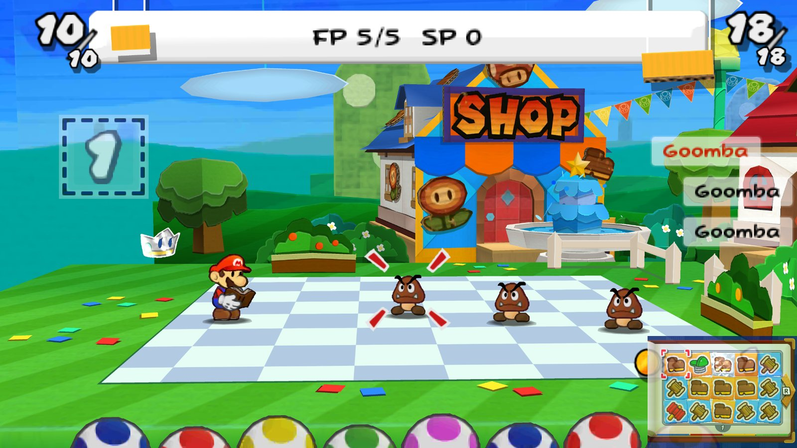

Sticker Star's world with The Thousand-Year Door's battles: FP and badges, a partner with her own moves, Superguards, Stylish moves, a cheering crowd and a Pit of 100 Trials.

00040000000A5E00. This mod contains no game files.romfs and exefs folders there.